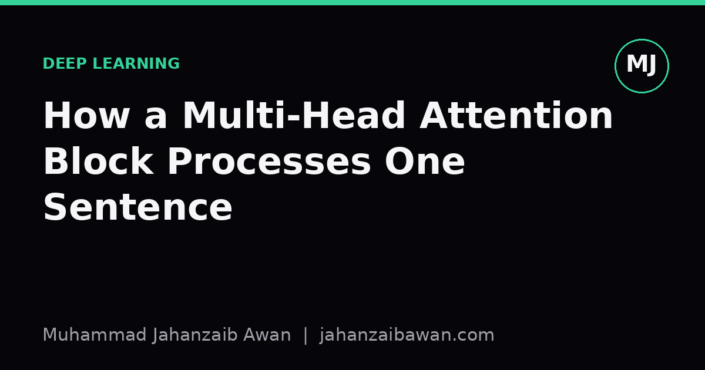

How a Multi-Head Attention Block Processes One Sentence
A worked walkthrough of what actually happens inside multi-head attention when a single sentence passes through, from vectors to weighted sums.

Why bother tracing it by hand
Most explanations of attention stop at the equation: softmax of QK transpose over the square root of d, times V. That is correct, but it tells you almost nothing about what actually happens to a sentence as it passes through. I find that people who can recite the formula often cannot say what a single attention head is doing to a specific word, or why you would want several heads instead of one. That gap matters if you are debugging a model, deciding how many heads to use, or trying to explain to a reviewer why your architecture choice is reasonable rather than cargo-culted from a paper.
So I want to walk through one short sentence, token by token, and follow it through a multi-head attention block as if we were tracing variables in a debugger. No new maths, just the same equations slowed down enough to see the moving parts.
From words to vectors, and vectors to queries, keys and values
Take the sentence the cat sat on the mat. After tokenisation and embedding, each of the six tokens becomes a vector, say of dimension 512. Add positional information so the model knows that cat is token two and mat is token six, not just that they exist somewhere in the sequence. We now have a matrix of shape six by five hundred and twelve: six rows, one per token, each row a 512-dimensional description of that word in context so far.
Here is the first thing people skip over: the model does not attend using the raw embeddings. It learns three separate linear projections, call them W_Q, W_K and W_V, each mapping the 512-dimensional space into a smaller space, say 64 dimensions if we are using eight heads of 512 divided by eight. Multiply our six by 512 matrix by each of these three weight matrices and we get three new six by 64 matrices: queries, keys and values. Every token now has its own query vector, its own key vector and its own value vector, all for this one head.
Think of the query as the question a token is asking, the key as the label a token offers in reply, and the value as the content it hands over if chosen. The word sat might produce a query that roughly encodes something like I am a verb, who is my subject and where am I happening. The key for cat might encode I am a singular animate noun, and the key for mat might encode I am a location noun following a preposition. These are not literal labels the model writes down, but the geometry of the learned space ends up doing something functionally similar.
Scoring, softmax, and the weighted sum
To compute how much sat should attend to every other token, take its query vector and compute a dot product with the key vector of every token, including itself. That gives six raw scores for sat, one per token in the sentence. Divide each score by the square root of 64, the dimension of the key vectors, which keeps the scores from growing too large as dimensionality increases and keeps gradients stable during training. Then apply softmax across those six scores so they sum to one.
Suppose, for illustration, this produces weights of roughly 0.05 for the, 0.55 for cat, 0.10 for sat itself, 0.05 for on, 0.05 for the again, and 0.20 for mat. These numbers are invented for the sake of intuition, but the shape of the result is realistic: one head might learn to route most of its attention from the verb towards its subject, with a smaller share going to the object of the sentence, and very little going to function words that carry less grammatical weight here.
Now take those six weights and use them to compute a weighted sum of the six value vectors. The output row for sat in this head is 0.55 times the value vector for cat, plus 0.20 times the value vector for mat, plus the smaller contributions from the rest, all added together into a single new 64-dimensional vector. That vector is no longer just sat in isolation; it is sat enriched with information pulled from the tokens it decided mattered most. Repeat this whole process independently for every token in the sentence and you get a new six by 64 matrix: the output of one attention head.
Why many heads, and what to actually take away
One head gives you one pattern of relationships. A second head, with its own separately learned W_Q, W_K and W_V, might focus on something entirely different, perhaps tracking which words are adjacent, or linking pronouns back to the nouns they refer to, or picking up on tense markers. Because each head has its own weight matrices, it carves the 512-dimensional space differently and can specialise in a different kind of relationship without the heads interfering with each other during training.
With eight heads, each producing a six by 64 output, you concatenate them back together into a six by 512 matrix, matching the original dimensionality. One final linear projection, W_O, mixes information across heads so the model can combine what each head discovered rather than keeping them in separate silos. That combined matrix is the output of the multi-head attention block, ready to be passed into the next stage of the network, typically a feed-forward layer, with residual connections and normalisation wrapped around both.
The practical lesson I keep coming back to is this: attention weights are not fixed rules, they are learned, data-dependent routing decisions, recomputed fresh for every sentence and every head. When you are debugging a transformer, do not just check that the shapes line up; check whether the attention patterns for a handful of real sentences look linguistically sensible for at least some heads. If every head produces a near-uniform distribution over tokens, something has likely gone wrong in training, and no amount of correct matrix algebra will save you from a model that is not actually learning to route information meaningfully.